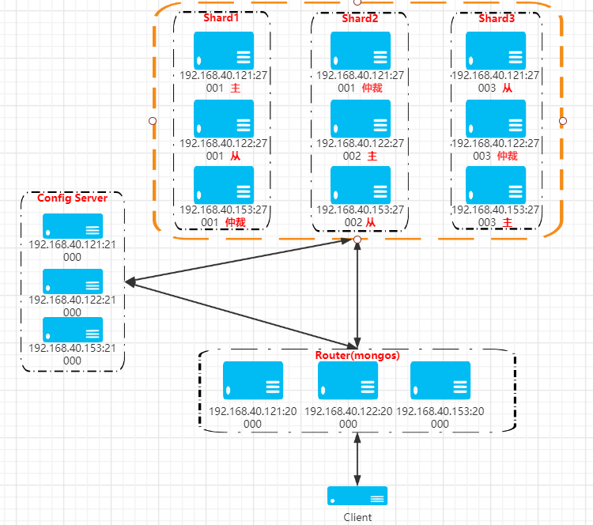

MongoDB副本集分片集群
一、环境规划
| 软件 | 版本 |
|---|---|
| centos | 7.9 |
| mongodb | v4.4.4 |
| 192.168.40.121 | 192.168.40.122 | 192.168.40.153 |
|---|---|---|
| mongos 20000 | mongos 20000 | mongos 20000 |
| config 21000 | config 21000 | config 21000 |
| shard1 27001 主 | shard1 27001 从 | shard1 27001 仲裁 |
| shard2 27002 仲裁 | shard2 27002 主 | shard2 27002 从 |
| shard3 27003 从 | shard3 27003 仲裁 | shard3 27003 主 |
mongos是路由服务器，config是配置服务器，shard1、shard2、shard3是分片服务器
网络拓扑图：

二、安装mongodb
下载解压 软件下载：https://fastdl.mongodb.org/linux/mongodb-linux-x86_64-rhel70-4.4.4.tgz
wget --no-check-certificate https://fastdl.mongodb.org/linux/mongodb-linux-x86_64-rhel70-4.4.4.tgz
tar -xzvf mongodb-linux-x86_64-rhel70-4.4.4.tgz -C /opt/
cd /opt
mv mongodb-linux-x86_64-rhel70-4.4.4 mongodb
mkdir -p /opt/mongodb/{conf,data,log}
配置环境变量
cat >> ~/.bash_profile << EOF
export MONGODB_HOME=/opt/mongodb
export PATH=\${PATH}:\${MONGODB_HOME}/bin
EOF
source ~/.bash_profile
创建数据目录
创建路由配置目录
mkdir /opt/mongodb/data/20000 -p
创建配置服务器目录
mkdir /opt/mongodb/data/21000 -p
创建shard目录
mkdir /opt/mongodb/data/27001 -p
mkdir /opt/mongodb/data/27002 -p
mkdir /opt/mongodb/data/27003 -p
创建日志目录
mkdir /opt/mongodb/log/20000 -p
mkdir /opt/mongodb/log/21000 -p
mkdir /opt/mongodb/log/27001 -p
mkdir /opt/mongodb/log/27002 -p
mkdir /opt/mongodb/log/27003 -p
创建一个普通用户来对mongodb服务进行管理：
useradd mongodb
更改mongodb服务目录属主：
chown -R mongodb.mongodb /opt/mongodb
三、配置角色搭建（configsvr）
三台服务器配置都一样，bindIp都为0.0.0.0 3.1、配置文件 cat /opt/mongodb/conf/config.conf
systemLog:
destination: file
logAppend: true
path: /opt/mongodb/log/21000/mongodb.log
storage:
dbPath: /opt/mongodb/data/21000
journal:
enabled: true
processManagement:
fork: true
net:
port: 21000
bindIp: 0.0.0.0
replication:
replSetName: conf
sharding:
clusterRole: configsvr
注意事项：
1、path和dbPath路径要对
2、指定角色名configsvr
3、该角色的副本集名字叫conf
3.2、启动
/opt/mongodb/bin/mongod -f /opt/mongodb/conf/config.conf
3.3、配置副本集 配置角色的一个副本集搭建 mongo 192.168.40.121:21000
config = { _id:"conf",
members:[
{_id:0,host:"192.168.40.121:21000"},
{_id:1,host:"192.168.40.122:21000"},
{_id:2,host:"192.168.40.153:21000"}
]
}
#初始化
rs.initiate(config)
#查看状态
rs.status()
其中，_id:"conf"应与配置文件中 的replSetName 一致，"members"中的"host"为三个节点的ip和port
四、路由角色搭建（mongos）
三台服务器配置都一样，bindIp都为0.0.0.0
4.1、配置文件 cat /opt/mongodb/conf/mongos.conf
systemLog:
destination: file
logAppend: true
path: /opt/mongodb/log/20000/mongos.log
processManagement:
fork: true
net:
port: 20000
bindIp: 0.0.0.0
sharding:
configDB: conf/192.168.40.121:21000,192.168.40.122:21000,192.168.40.153:21000
注意事项：
1、log的路径要指对
2、sharding.configDB 表示监听的配置服务器，conf表示配置角色的副本集的名字
4.2、启动
路由角色使用mongos命令来启动，其他角色都是用mongod命令来启动
/opt/mongodb/bin/mongos -f /opt/mongodb/conf/mongos.conf
五、数据角色搭建（shard）
三个shard，共有三个副本集。 5.1、Shard1 5.1.1、配置文件 cat /opt/mongodb/conf/shard1.conf
systemLog:
destination: file
logAppend: true
path: /opt/mongodb/log/27001/mongodb.log
storage:
dbPath: /opt/mongodb/data/27001/
journal:
enabled: true
processManagement:
fork: true
net:
port: 27001
bindIp: 0.0.0.0
replication:
replSetName: data1
sharding:
clusterRole: shardsvr
注意事项：
1、副本集名字data1
2、端口27001
5.1.2、启动
/opt/mongodb/bin/mongod -f /opt/mongodb/conf/shard1.conf
5.1.3、配置副本集 mongo 192.168.40.121:27001
config = { _id:"data1",
members:[
{_id:0,host:"192.168.40.121:27001",priority:2},
{_id:1,host:"192.168.40.122:27001",priority:1},
{_id:2,host:"192.168.40.153:27001",arbiterOnly:true}
]
}
#初始化副本集
rs.initiate(config)
#查看状态
rs.status()
注意事项：
1、优先级最高的即成为主节点
2、arbiterOnly表示仲裁节点
5.2、Shard2
5.2.1、配置文件
cat /opt/mongodb/conf/shard2.conf
systemLog:
destination: file
logAppend: true
path: /opt/mongodb/log/27002/mongodb.log
storage:
dbPath: /opt/mongodb/data/27002/
journal:
enabled: true
processManagement:
fork: true
net:
port: 27002
bindIp: 0.0.0.0
replication:
replSetName: data2
sharding:
clusterRole: shardsvr
注意事项：
1、副本集名字data2
2、端口27002
5.2.2、启动
/opt/mongodb/bin/mongod -f /opt/mongodb/conf/shard2.conf
5.2.3、配置副本集 mongo 192.168.40.122:27002
config = { _id:"data2",
members:[
{_id:0,host:"192.168.40.121:27002",arbiterOnly:true},
{_id:1,host:"192.168.40.122:27002",priority:2},
{_id:2,host:"192.168.40.153:27002",priority:1}
]
}
#初始化副本集
rs.initiate(config)
#查看状态
rs.status()
5.3、Shard3
5.3.1、配置文件
cat /opt/mongodb/conf/shard3.conf
systemLog:
destination: file
logAppend: true
path: /opt/mongodb/log/27003/mongodb.log
storage:
dbPath: /opt/mongodb/data/27003/
journal:
enabled: true
processManagement:
fork: true
net:
port: 27003
bindIp: 0.0.0.0
replication:
replSetName: data3
sharding:
clusterRole: shardsvr
注意事项：
1、副本集名字data3
2、端口27003
5.3.2、启动
/opt/mongodb/bin/mongod -f /opt/mongodb/conf/shard3.conf
5.3.3、配置副本集
mongo 192.168.40.153:27003
config = { _id:"data3",
members:[
{_id:0,host:"192.168.40.121:27003",priority:1},
{_id:1,host:"192.168.40.122:27003",arbiterOnly:true},
{_id:2,host:"192.168.40.153:27003",priority:2}
]
}
#初始化副本集
rs.initiate(config)
#查看状态
rs.status()
六、启用分片
路由服务器： mongo 192.168.40.121:20000
添加分片信息
sh.addShard("data1/192.168.40.121:27001,192.168.40.122:27001,192.168.40.153:27001");
sh.addShard("data2/192.168.40.121:27002,192.168.40.122:27002,192.168.40.153:27002");
sh.addShard("data3/192.168.40.121:27003,192.168.40.122:27003,192.168.40.153:27003");
#查看集群状态
sh.status()
七、开启安全认证
副本集加分片的安全认证需要配置两方面的，
1、副本集各个节点之间使用内部身份验证，用于内部各个mongo实例的通信，只有相同keyfile才能相互访问。所以都要开启keyFile: /opt/mongodb/conf/KeyFile.file
2、对于所有的mongod，才是真正的保存数据的分片。mongos只做路由，不保存数据。所以所有的mongod开启访问数据的授权authorization:enabled。这样用户只有账号密码正确才能访问到数据
副本集的各个节点成员之间使用内部身份验证，使用keyfile的内容作为共享密码 生成密钥文件
openssl rand -base64 756 > /opt/mongodb/conf/KeyFile.file
chmod 400 /opt/mongodb/conf/KeyFile.file
然后复制到其他两个节点上
scp /opt/mongodb/conf/KeyFile.file 192.168.40.122:/opt/mongodb/conf/
scp /opt/mongodb/conf/KeyFile.file 192.168.40.153:/opt/mongodb/conf/
使用客户端连接到mongodb集群时，开启访问授权 连接到下面每一个mongo实列主节点中，然后在里面去创建一个管理员账号和密码
路由角色主：
mongo 192.168.40.140:20000
配置角色主
mongo 192.168.40.140:21000
share1主：
mongo 192.168.40.141:27001
share2主：
mongo 192.168.40.142:27002
shard3主：
mongo 192.168.40.143:27003
创建管理员账号和密码
use admin
db.createUser({ user: "root", pwd: "MongoDB.2019", roles:[{role:"root",db:"admin"}] })
创建完账号之后，我们需要去开启认证 先关掉所有mongo
ps -ef | grep mongo | awk '{print $2}' | xargs kill -9
在配置文件里面，开启认证，让mongo需要用户名和密码才能访问 mongod配置文件(分片校色+配置角色)
security:
keyFile: /opt/mongodb/conf/KeyFile.file
authorization: enabled
mongos配置文件(路由角色)
security:
keyFile: /opt/mongodb/conf/KeyFile.file
启动所有mongo
/opt/mongodb/bin/mongod -f /opt/mongodb/conf/config.conf
/opt/mongodb/bin/mongod -f /opt/mongodb/conf/shard1.conf
/opt/mongodb/bin/mongod -f /opt/mongodb/conf/shard2.conf
/opt/mongodb/bin/mongod -f /opt/mongodb/conf/shard3.conf
/opt/mongodb/bin/mongos -f /opt/mongodb/conf/mongos.conf
验证：
show dbs #没有认证，查看不到数据库
use admin #要切换到admin数据库下，认证用户名和密码
db.auth("root","MongoDB.2019") #如果返回1表示连接成功
show dbs #认证了，查看到数据库